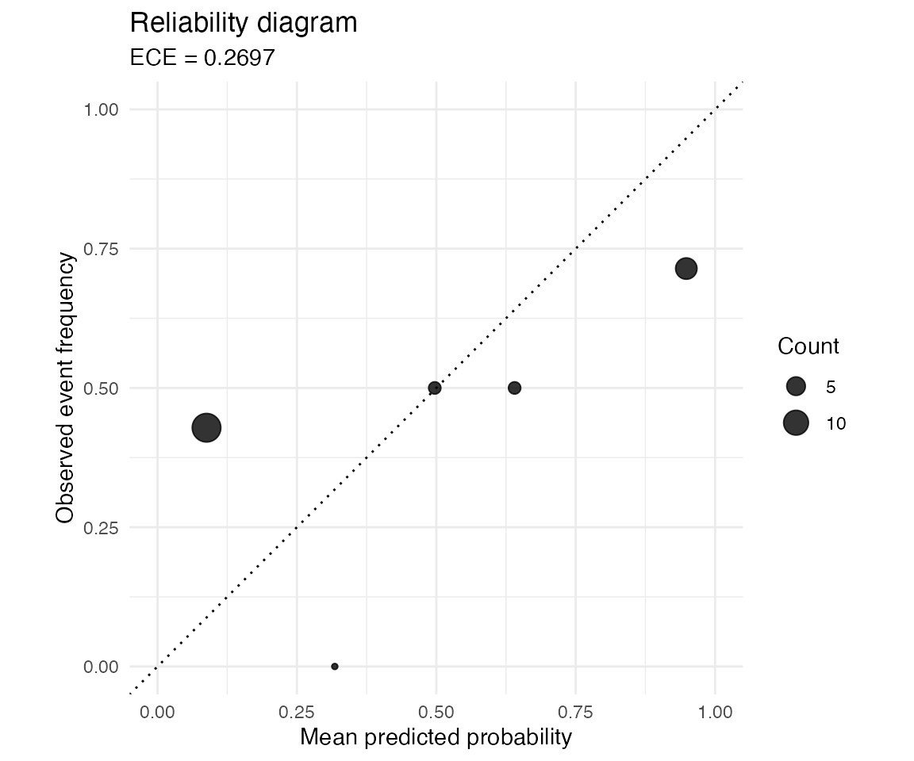

library(probcal)
library(dplyr)
#>
#> Attaching package: 'dplyr'
#> The following objects are masked from 'package:stats':
#>
#> filter, lag
#> The following objects are masked from 'package:base':
#>
#> intersect, setdiff, setequal, unionGoal
This vignette shows a complete calibration workflow with a dataset
included in R. The example uses iris as a binary
classification problem: versicolor versus
virginica.
The important point is the data split. The classifier is fitted on a training set. The calibrator is fitted on a calibration set. The final assessment uses a test set that was not used in either fitting step.
Prepare the data
set.seed(1001)
iris_binary <- iris |>
filter(Species != "setosa") |>
mutate(y = as.integer(Species == "virginica")) |>
group_by(y) |>
mutate(
split = sample(rep(
c("train", "calibration", "test"),
times = c(25, 12, 13)
))
) |>
ungroup()
iris_binary |>
count(split, y)
#> # A tibble: 6 × 3
#> split y n
#> <chr> <int> <int>
#> 1 calibration 0 12
#> 2 calibration 1 12
#> 3 test 0 13
#> 4 test 1 13
#> 5 train 0 25
#> 6 train 1 25Fit a classifier
The classifier is deliberately simple. The goal is not to optimize predictive performance, but to produce probabilities that can be evaluated and calibrated.
train <- iris_binary |>
filter(split == "train")
calibration <- iris_binary |>
filter(split == "calibration")
test <- iris_binary |>
filter(split == "test")
classifier <- glm(
y ~ Sepal.Length + Sepal.Width,
data = train,
family = binomial()
)
calibration <- calibration |>
mutate(raw_p = predict(classifier, calibration, type = "response"))
test <- test |>
mutate(raw_p = predict(classifier, test, type = "response"))Fit calibrators
Here we fit two calibrators on the calibration set.
cal_beta() works directly on probabilities.
cal_platt() can be used on raw probabilities or scores.
Compare calibration metrics
Calibration metrics are computed only on the test set.
metric_table <- bind_rows(
test |>
summarise(method = "raw", ece = ece(raw_p, y, bins = 5),
mce = mce(raw_p, y, bins = 5), ace = ace(raw_p, y, bins = 5)),
test |>
summarise(method = "beta", ece = ece(beta, y, bins = 5),
mce = mce(beta, y, bins = 5), ace = ace(beta, y, bins = 5)),
test |>
summarise(method = "platt", ece = ece(platt, y, bins = 5),
mce = mce(platt, y, bins = 5), ace = ace(platt, y, bins = 5))
) |>
mutate(across(where(is.numeric), function(x) round(x, 3)))
metric_table
#> # A tibble: 3 × 4
#> method ece mce ace
#> <chr> <dbl> <dbl> <dbl>
#> 1 raw 0.191 0.351 0.193
#> 2 beta 0.27 0.341 0.207
#> 3 platt 0.091 0.15 0.103The best method is data dependent. A calibrator should be chosen on a validation criterion that matches the intended use of the probabilities.
Plot the calibrated probabilities
reliability_diagram(test$beta, test$y, bins = 5)
The diagonal represents perfect calibration. Points above the diagonal indicate bins where the observed event frequency is higher than the mean predicted probability. Points below the diagonal indicate overconfident predictions.